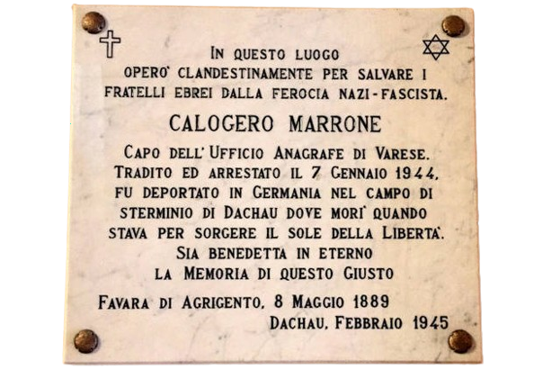

CALOGERO MARRONE
Storia
La vita di Calogero Marrone può essere divisa in alcuni punti principali
Nascita
Nacque il 12 maggio 1889 a Favara, in Sicilia, da una famiglia della media borghesia e aveva una solida cultura umanistica
La giovinezza
Combatté nella Prima Guerra Mondiale come sergente. In quanto reduce, trovò posto presso il comune di nascita come segretario della sezione Combattenti e Reduci
L'arrivo a Varese
Rifiutò di iscriversi al partito fascista, per questo dovette scontare alcuni mesi in carcere e fu costretto ad allontanarsi dal paese natio. Arriva a Varese nel 1931, dopo aver vinto un concorso per l’ufficio anagrafe, del quale diventerà poi capo.
Il suo contributo alla Resistenza
Marrone divenne un attivo collaboratore della Resistenza. Trasformò il suo ufficio in un centro di aiuto clandestino: falsificava documenti d’identità per ebrei, partigiani e antifascisti, consentendo loro di sfuggire alla cattura o di attraversare il confine verso la Svizzera.
C’è un albero per ogni uomo che ha scelto il bene
CALOGERO MARRONE
Il contributo alla Resistenza
L’attività di Marrone era particolarmente pericolosa: se scoperto, rischiava la morte immediata o la deportazione. Marrone lavorava in modo discreto, utilizzando la burocrazia contro il regime fascista. I documenti che produceva erano spesso indistinguibili dagli originali, grazie alla sua competenza amministrativa e all’accesso ai timbri ufficiali.
La sua attività non passò inosservata. Denunciato probabilmente da un impiegato del Comune, fu sospeso dal servizio a fine dicembre 1943 dal podestà Domenico Castelletti per "irregolarità" nel rilascio di documenti. Marrone avrebbe potuto fuggire, avvisato in anticipo del pericolo dall’amico don Luigi Locatelli (canonico della Basilica di San Vittore), ma decise di rimanere. Non voleva abbandonare la famiglia e, nonostante fosse consapevole della gravità delle accuse, scelse di affrontare il destino con dignità. La sua decisione rispecchia il grande senso di responsabilità e il coraggio morale che lo caratterizzavano.

CALOGERO MARRONE
L'arresto
Nel gennaio 1944, Marrone venne arrestato dalle SS e accusato di collaborazionismo con la Resistenza, favoreggiamento nella fuga degli ebrei e violazione dei doveri d’ufficio. Queste accuse, per i nazisti, equivalevano a una condanna a morte.
Dopo l’arresto, Marrone fu incarcerato a Varese, Como e Milano, dove subì continui interrogatori e torture, ma non rivelò mai i nomi dei suoi collaboratori o delle persone che aveva aiutato. Nell'agosto 1944 fu trasferito al campo di Bolzano e, successivamente, deportato a Dachau, campo di concentramento nazista. Le sue lettere dalla prigionia mostrano un uomo di profonda umanità, che cercava di infondere coraggio alla moglie e ai figli nonostante le terribili condizioni di detenzione. Il 15 febbraio 1945, debilitato dagli stenti e colpito dal tifo petecchiale, Calogero Marrone morì, poco prima della liberazione.
RICORDO
Onorificenze postume
La figura di Marrone è stata a lungo dimenticata, ma negli ultimi decenni è stata riscoperta e onorata. Nel 1994, una targa commemorativa è stata posta davanti al suo ex ufficio a Varese, ricordandolo come un "Giusto tra i giusti" per il suo sacrificio. Il suo nome è anche iscritto nel Giardino dei Giusti a Gerusalemme. Dopo l’arresto, Marrone fu incarcerato a Varese, Como e Milano, dove subì continui interrogatori e torture, ma non rivelò mai i nomi dei suoi collaboratori o delle persone che aveva aiutato. Nell'agosto 1944 fu trasferito al campo di Bolzano e, successivamente, deportato a Dachau. Il 15 febbraio 1945 morì, poco prima della liberazione. incluso nel Giardino dei Giusti a Gerusalemme, riconosciuto come "Giusto tra le Nazioni".
